3. Travel through the South of Spain, Jaen and Granada
3. Travel through the South of Spain, Jaen and Granada
August 28 to 31, 2021


55. Baeza
55. Baeza
The first thing I went to visit in Baeza was to go to the old town that is located in the vicinity of the cathedral.
The cathedral is opposite Plaza de Santa María, which is crowned by a fountain, that of Santa María. This fountain is one of the most beautiful in all of Andalusia. It was built in the 16th century in the reign of Felipe II, it is there that his coat of arms of great proportions was carved. Below is the coat of arms of the city. And it is that both the square, the cathedral and the nearby palaces are from the 15th and 16th centuries, the period when the city flourished and are mostly Renaissance in style.
In front of the cathedral the seminary of San Felipe Neri, which would begin training priests from the 17th to the 20th century and would be one of the most important in Andalusia. In the 20th century it would become a junior college and later it would be the headquarters of the International University of Andalusia, which is its current use.
Going along with the seminary is the Jabalquinto palace, a representative work of the flamboyant style of the 15th century, whose most famous palace is that of the infantado of Guadalajara, my city. I would see another of the palaces of this style 2 months later on my visit to Ciudad Rodrigo, the house of the Águilas. The façade contains many decorative elements such as Gothic pinnacles and small shields. as well as human figures that climb through the arch of the door.
The courtyard is Renaissance and the imperial-style baroque staircase with numerous details from the early 17th century.
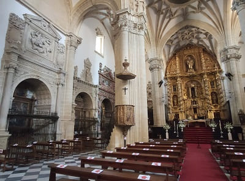
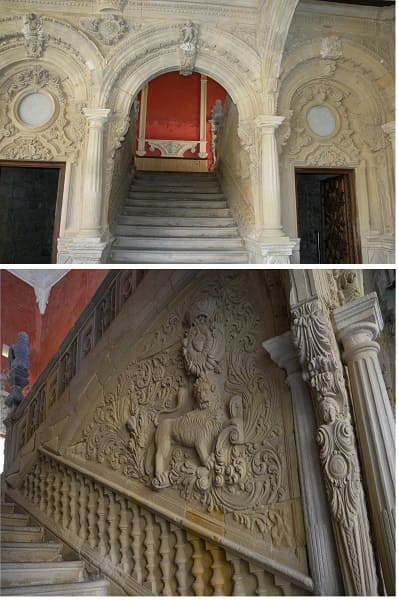
In front is the church of Santa Cruz, the oldest in the city. Remember that Baeza is a much more modern city than its sister Úbeda, since it was populated just at the time of the reconquest and was fortified. This church is in the Romanesque style of the 13th century and one of the rarities of Andalusia since there is hardly any Romanesque because when the reconquest was made the Gothic was already implanted but Baeza was one of the cities that was reconquered before, passing in turn to the Arabs for years before being taken over by Christians permanently.
It is even believed that this church was built on a previous temple of Visigothic origin. It preserves polychromies from the previous church.
And I would go on to see the Cathedral of the Nativity of Our Lady of Baezawhich is quite complete and is from the 15th century in a Gothic style with some Baroque elements inside, and with quite enriched chapels. It is built on the old mosque of the city from the 11th century. In the 12th century it became a church and later in the 13th century with the reconquest it would be Catholic. It will be already in the 16th century where the construction of the cathedral on the mosque began. You can climb the tower that is the old minaret of the mosque and still retains its Arab windows but they are bricked up where you can contemplate the incredible views of the city with the Sierra de Cazorla in the background, the landscape being incredible.
Of the multitude of chapels, the most important is the golden chapel. The cover is Mannerist, semicircular with a corbel on the key, arranged between Corinthian pilasters on pedestals decorated with allegorical figures. Two female figures are arranged in the spandrels. It ends with a relief of the Annunciation on the entablature with a continuous frieze. The altarpiece is classicist.
It also gives us an idea of what was the domain of the city in times when there was no aviation or long-range weapons. Baeza was an important city in the reconquest in which it was taken by the Christians around 1100 but it would be reconquered by the Arabs before the final assault and would give the door to Granada.
The patio is Renaissance in style like almost the entire complex and is on the patio of the old mosque. The chapels are mostly Renaissance and Baroque in style, with almost all of the altarpieces in the latter style. The door of San Andrés that gives access to the Plateresque-style sacristy and the chapel gate with many details are striking.
The day before the visit to Baeza I would be at the walls where there is a siege museum. Remember that once the entire Iberian Peninsula was taken and conquered, the walls would be pulled down by order of Isabel La Católica for the growth of the city, except for a small part that is the one that can be visited.
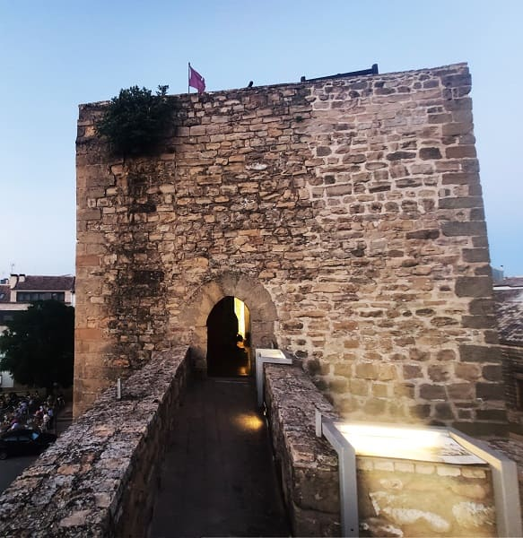
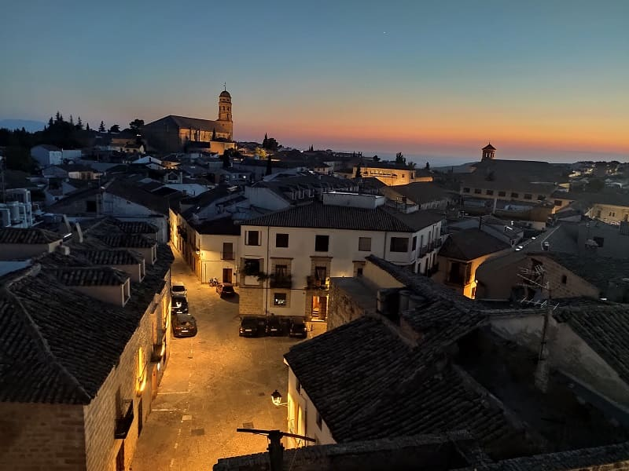
Another of Baeza's historic buildings is the University building, which is sometimes confused with the Felipe Neri seminary. This building began housing the university of the entire conquered Andalusian area, being one of the most prestigious. Shortly after the French invasion, it would stop working as a university and would have different uses as a secondary education institute. Today it works as a museum and there is a room dedicated to Antonio Machado.
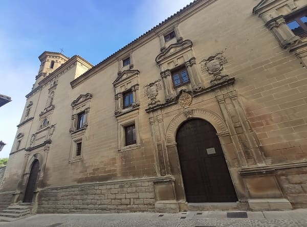
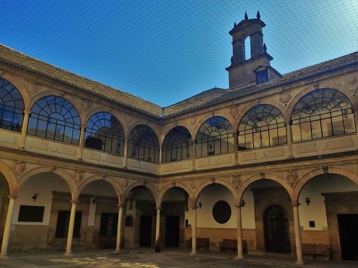
Apart from the Jabalquinto palace, the university palace (where Antonio Machado studied) that is attached to this palace, we have to see the palace of Salcedo, and that of Sánchez Valenzuela. Because it is a more recent city, the number of palaces was much greater in Úbeda and in many cases these noble houses belonged to people from Úbeda families.
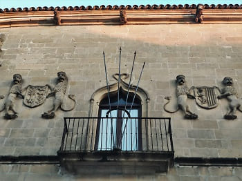
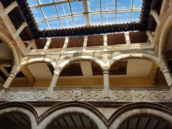
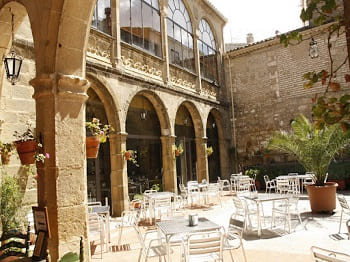
In addition to these buildings for civil use is the town hall or former corregidor's house that functioned as a prison. The coat of arms of Baeza and that of Felipe II are sculpted on it. In front is the house where Antonio Machado lived.
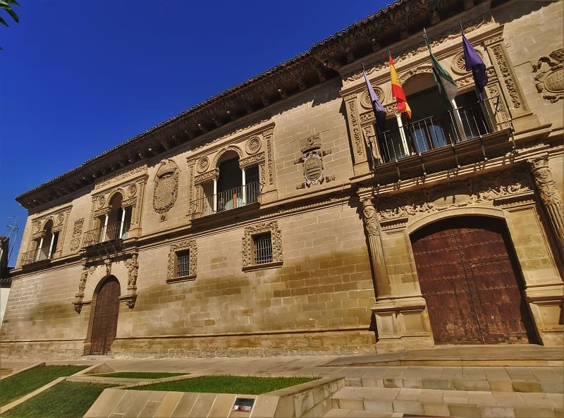
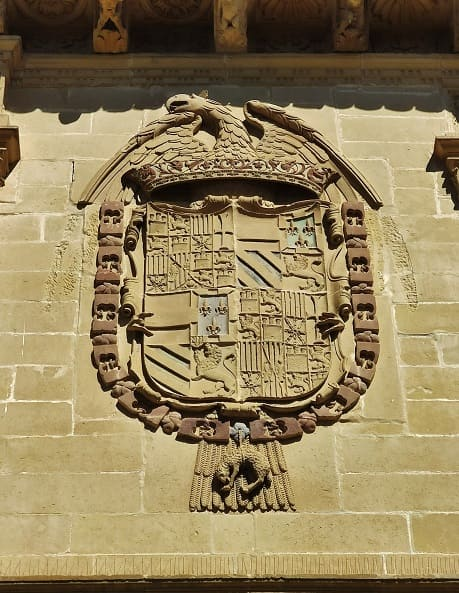
Another of the most important Plateresque buildings is the building of the old butcher shops of Baeza, which is located in Plaza del Pópulo, a square of the same importance as that of Santa María although instead of the religious plane in this case in the civil plane. It is surrounded by important buildings, the butcher shop today the judicial headquarters and the house of the people where the Tourist Office is located. The square is finished off with the fountain of lions, in the Renaissance style, and the Villalar arch and the Jaén gate on which the coat of arms of Carlos V is carved, commemorating the arrival to the city. It is from his reign when the city begins to flourish, being the maximum splendor with Felipe II.
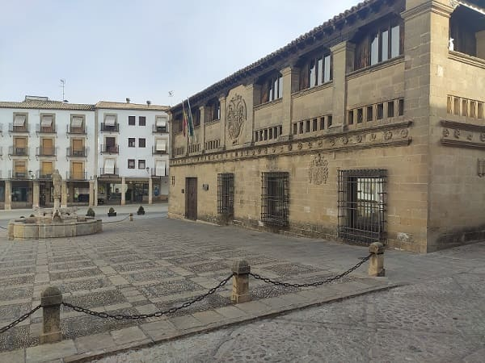
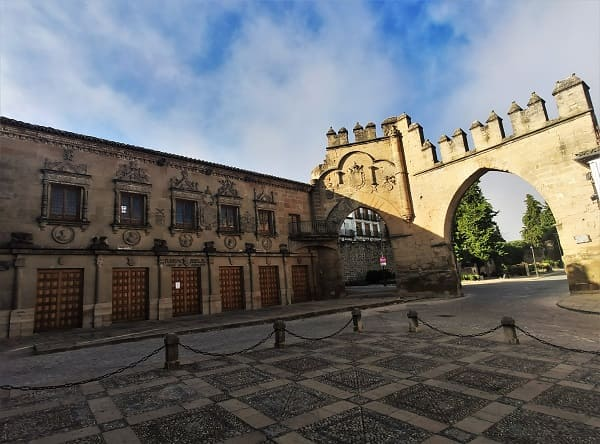
In addition to the church of Santa Cruz and the cathedral, there are numerous important churches in the city such as the church of El Salvador, from the 13th century in the Gothic-Mudejar style and the church of San Francisco strong>. The Franciscans wanted to copy the Úbeda chapel and compete with it, but a series of disasters such as the fall of one of the arches and the subsequent earthquake in Lisbon caused a large part of the building to collapse. The current ruins of the Benavides chapel in the city of Baeza are the remains of the main chapel of the church of the convent of minor friars of San Francisco. It had been founded in 1538, according to an agreement with the monastic community, as a funeral chapel for the Benavides lineage. The chapel, which came to measure about 50 meters, was ruined at the beginning of the 19th century due to an earthquake followed by disastrous storms and finally by looting by Napoleonic troops. Currently you can see its interior from the outside and it gives an idea of how big it was.
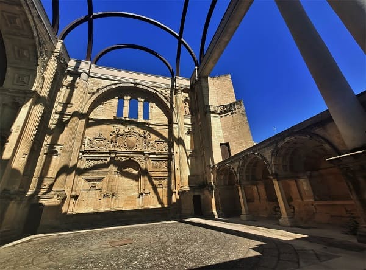


56. Úbeda
56. Úbeda
Then I would go to Úbeda, a city very similar to Baeza but historically earlier.
And it is that there was an Úbeda before the Romans due to various excavations that have been carried out in the surroundings of the city that say that it could have been 6000 years old and be the oldest city in all of western Europe, a title held by the city of Cádiz and that geographical area. The Romans would properly baptize it as Úbeda (Úbeda la vieja). In the time of the Visigoths, the vandals on their way through the peninsula would destroy the city and it would move elsewhere. That is the reason why they will call it the new Ubeda. The Arabs would conquer it as they passed through the peninsula and finally, after a fight between Taifa kingdoms, it would be claimed by the Almohads of Granada.
In the 11th century, Alfonso VI would conquer the city, being a first and ephemeral attempt since it was conquered again by the Arabs and it would be almost another 100 years before the troops of Ferdinand III of Castile definitively gave the city to the Christian side. . In between the city would be sacked, devastated and its inhabitants decimated, so that almost most of the city today is after the fourteenth century. Due to the fact that in the last conquest the Arabs surrendered, they were allowed to continue living in the city and Arabs, Jews and Christians coexisted as in other Castilian cities, which also happened when the Christians surrendered before the Aldalus pass in which they were allowed to live in their cities. With the passage of time, the Castilian kings would give privileges and privileges to its inhabitants to try to have an immigration from the north of the kingdom to increase the troops and defenses of the south and to banish the Arabs from the peninsula.
Once the car is parked in the southwest of the city, very close to the bullring, I would go to the old town. The first important building I came across was the Santiago hospital, dating from the 16th century, which I only saw from the outside, which can be seen in the image. However, it is an authentic jewel inside, with rooms with frescoes by the best painters of the time and a large interior patio, an example of the Andalusian Renaissance style. It has two towers and due to its shape and dimensions it has sometimes been called the Escorial of Andalusia.
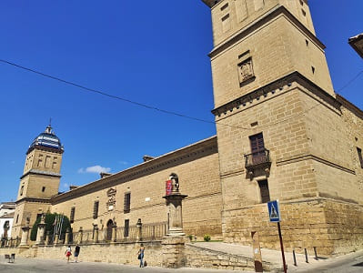
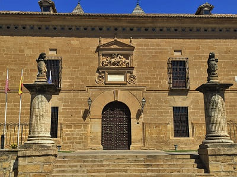
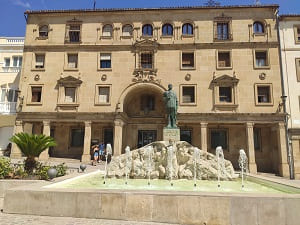
Another building on my way to the center was the church of San Isidoro and the church of Santo Domingo. The one of San Isidoro of Gothic style on the outside of the 16th century.
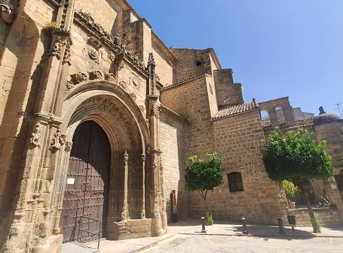
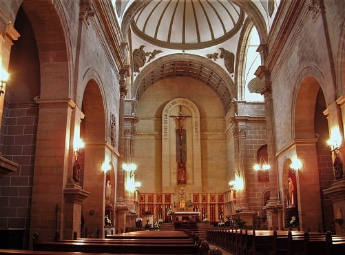
And finally it would reach one of the most important squares as the nerve center of Úbeda, the Plaza de Andalucía, and the monument to General Saro presiding over the square. On the side the convent and its church of the Holy Trinity. These buildings are in the Baroque style and the convent has two cloisters, from the 16th and 17th centuries.
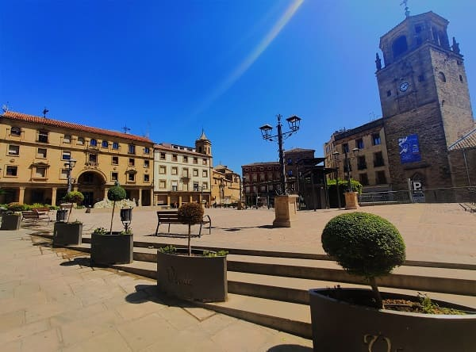
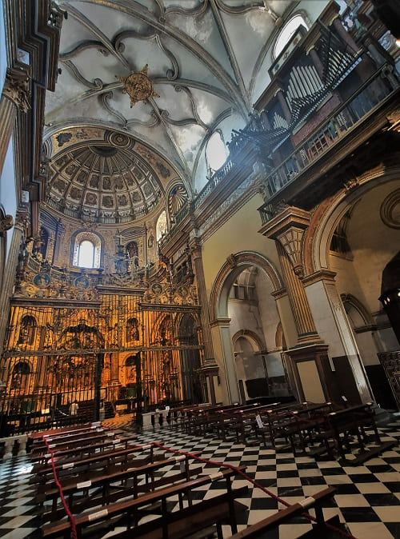
Very close would be the church of San Nicolas, also represented in the image, which would begin to be built in the 14th century but like almost the entire city, it would be finished in the 16th century, in Gothic and Renaissance style. The doorway of the Dean Ortega chapel stands out, to the left of the main altar, which is a great triumphal arch, framed by columns with rings of skulls that symbolize death and heads of cherubs that recall the hope of resurrection. Also the gate that closes it, with numerous details, one of the most accomplished in Andalusia.
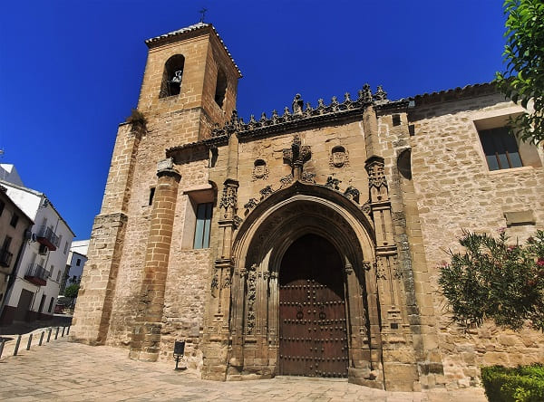
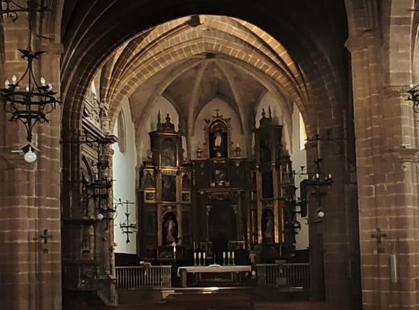
Going east you would see the convent of the Discalced Carmelites near the food market, the Luis Cueva palace and the archaeological museum of Úbeda which is free, highly recommended as it is an old Arab palace that preserves exposed Mozarabic polychrome coffered ceilings.
 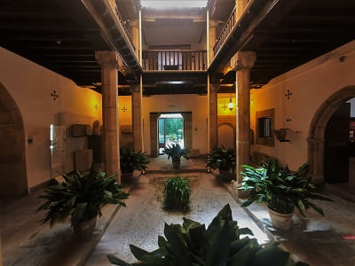
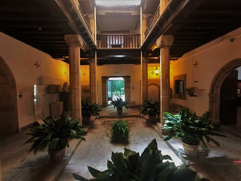
Almost at noon I would go to see the most important parts of the city towards the south towards the most important monuments. The first would be the church of San Pablo, which is believed to have been built since the Visigothic period. Its location in a central square and its proximity to the old town hall give it a marked assembly character, since until the 15th century the city council and nobles met there. It has two portals, one in the Romanesque style and the other, more modern, in the Elizabethan Gothic style with a multitude of details. From the Romanesque style of the church, its apse is preserved. The tower would already be from the 16th century, at which time it would already be passing to the Renaissance style. The chapels are of great value where important gentlemen of that time are buried.
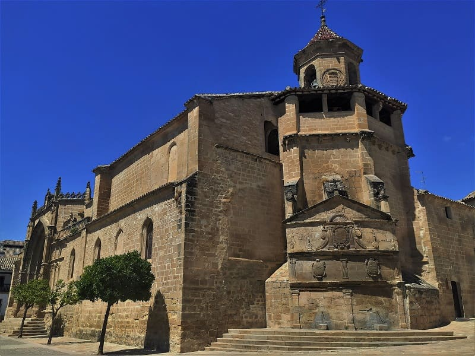
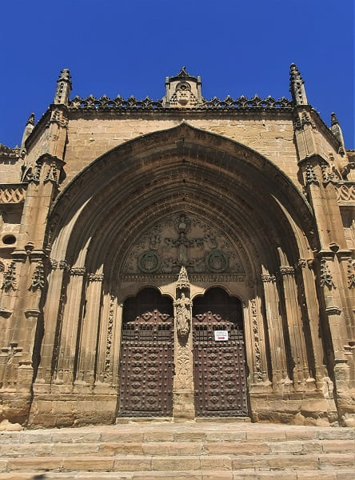
The Plaza de Mayo is very large and the market and cattle fairs have always been held there. In it is the old town hall, a Renaissance building dating from the seventeenth century.
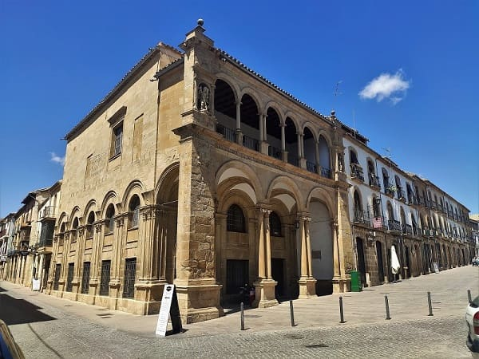
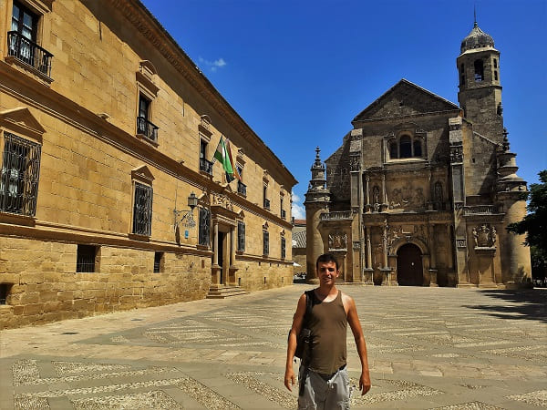
If we continue we will arrive at the religious center of Úbeda, the Vázquez de Molina square. In it are the most important buildings today. The sacred main chapel, the palace of the Deans, the town hall and other civil buildings, the basilica of Santa María de los Reales Alcázares, the palace of the Marques de Mancera and other singular palaces.
Nearby is the palace of Anguis Medinilla and next to it is the convent of Santa Clara, the oldest in the city from the 13th century, which would be very close to the northern walls of the city. Nearby is the church of Santo Domingo, a church that must have been attached to the city wall. From the same century as the convent of Santa Clara, but it underwent many modifications, now having a Plateresque Renaissance style doorway. It currently works to give events and meetings in the city. It has a wooden Mudejar ceiling and different tombs on the sides.

Finally, the most beautiful palace in Úbeda in the same style, flamboyant Gothic, and importance as that of Jabalquinto in Baeza, the Torres palace. With different details such as shields, coats of arms, human figures, ornaments on the pilasters and gargoyles that highlight the beauty of the cover. Inside, there is a Renaissance-style patio with a more Plateresque staircase.
On these lines the patio followed by the park that is nearby and the monument to Ensign Rojas Navarrete. This park is located near the church of San Lorenzo. This church is also from the 13th century, one of the oldest and most of it was rebuilt after some deterioration over the centuries. However, it preserves the original Mudejar coffered ceiling and it is well worth going to see it.
Úbeda undoubtedly has more palaces than Baeza and had much more inhabitants, but Baeza was one of the favorites of the Catholic kings and Carlos V, with which more extensive works began to be carried out, proof of this is the cathedral. Without a doubt, they deserve to be recognized as a World Heritage Site.


57. Martos
57. Martos

58. Alcalá La Real
58. Alcalá La Real

© 2016 - All Rights Reserved - Designed by Sergio López Martínez
El sitio se mantiene gracias a la publicidad, por favor Desactiva Adblock para seguir navegando
He desactivado Adblock![[Valid RSS]](https://www.onepointsync.com/wp-content/uploads/2016/08/valid-rss-rogers.png "Validate my RSS feed")